树型数据结构
原文：https://www.studytonight.com/advanced-data-structures/avl-tree
AVL 树是另一种特殊的树，它有几个特性使它特别。这些是:
这是一个本质上平衡的 BST。
它是自我平衡的。
它不是完全平衡的。
每个子树也是一个 AVL 树。
AVL 树的图示如下所示:
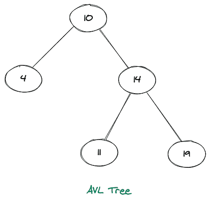
当被解释时，我们可以说这是一个高度平衡的二叉查找树。高度平衡表示每个节点的左右子树高度之差不能大于 1(即高度(左)-高度(右)< = 1 )。
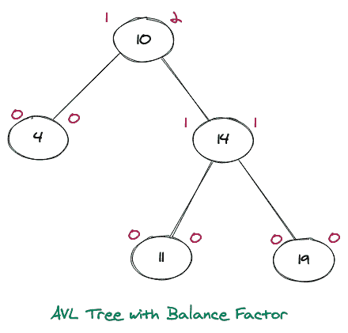
请注意，上面的 BST 中的每个节点都包含两个值，左值表示该节点的左子树的高度，右值表示该节点的右子树的高度，可以看出，在没有一个节点上，我们的值差大于 1，因此使其成为平衡的 AVL Tree。
一个自平衡树意味着当我们试图在这个 BST 中插入任何元素，如果它违反了任何节点的平衡因子，那么它会相应地动态旋转自己，使自己自平衡。众所周知，AVL 树是第一个被提出的著名的动态平衡树。
它不是完美平衡的，完美平衡意味着每个节点的右子树和左子树之间的高度等于 0 。
完美平衡自动车辆定位树的图示如下所示:
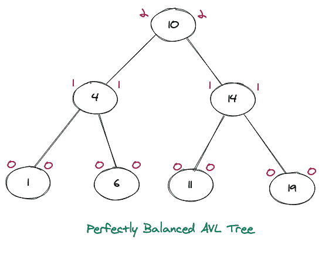
上述 AVL 树的所有节点的平衡因子等于 0( 高度(左)-高度(右)= 0 )，使其成为完美的 AVL 树。还需要注意的是，一个完美的 BST 和一个完美的 AVL 树是一样的。如果我们仔细看看上面所有的图形表示，我们可以清楚地看到，AVL 树的每个子树也是一个 AVL 树。
现在我们再来看两个图片，其中一个是 AVL 树，一个不是。
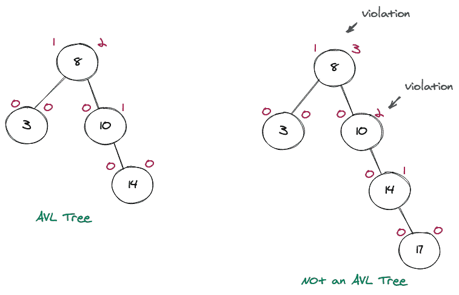
虽然上面的两棵树都是 BST，但是上面的图中只有左边的 BST 是 AVL 树，因为它高度平衡。在右 BST 中，我们有两个违规节点(即 8 和 10)，在这两种情况下，平衡因子都大于 2。需要注意的是，这个树可以通过一定的方式进行旋转，使其成为 AVL 树。
为什么是 AVL 树？
当我们已经有了类似的数据结构(即 BST 的)时，为什么我们还需要它的复杂版本呢？。答案在于，BST 在某些场景中有一些限制，使得搜索、插入等操作成本很高(与O(n)一样高)。
考虑下面两个 BST 的图示:
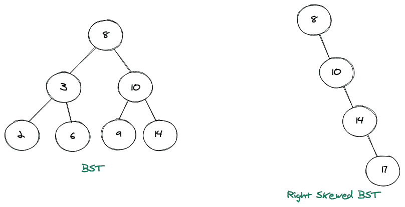
左 BST 的高度为O(logn)，右 BST 的高度为O(n)，因此左 BST 的搜索操作时间复杂度为O(logn)，右偏斜的为O(n)，这也是其最坏的情况。因此，如果我们有这样一个倾斜的树，那么使用 BST 就没有任何好处，因为当涉及到时间和空间复杂度时，它就像一个链表。
这就是为什么我们需要一个平衡的 BST，这样所有的基本操作都保证了 O(logN)的时间复杂度。
树旋转
如果 AVL 树遇到任何违反平衡因子的情况，那么它会尝试做一些旋转来使树再次平衡。总共有四次旋转，我们将逐一查看。主要有:
向左旋转
右旋转
左右旋转
左右旋转
1.向左旋转
当违规发生在违规节点的左子节点的左子树中时，将执行此循环。考虑下面一个不平衡的 BST 的图形表示，为了做到这一点，我们将做一些旋转。
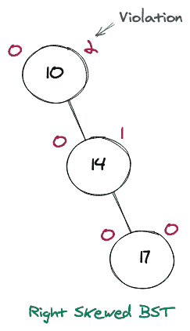
很明显，这不是一个 AVL 树，但是考虑到违规发生的节点，我们把这个节点作为一个枢纽来进行我们的旋转。右边的树很重，导致问题的节点是 17，如果我们移除那个节点，我们将有一个平衡的 BST(即 AVL)。由于它严重向右倾斜，我们将向左旋转以使其平衡。
考虑将上面的右斜树做成 AVL 树的图示。
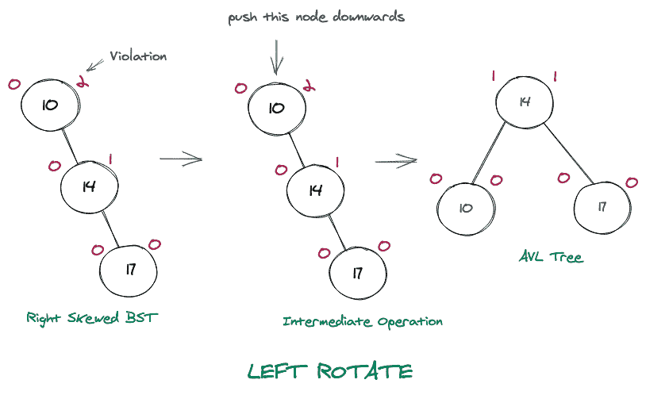
2.右旋转
当违规发生在违规节点的右子节点的右子树中时，将执行此循环。考虑下面一个不平衡的 BST 的图形表示，为了做到这一点，我们将做一些旋转。
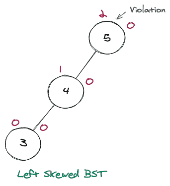
很明显，这不是一个 AVL 树，但是考虑到违规发生的节点，我们把这个节点作为一个枢纽来进行我们的旋转。树的左边很重，导致问题的节点是 3，如果我们移除那个节点，我们将有一个平衡的 BST(即 AVL)。由于它严重偏左，我们将做一个右旋转，使其平衡。
考虑将上面左倾的树做成 AVL 树的图示。
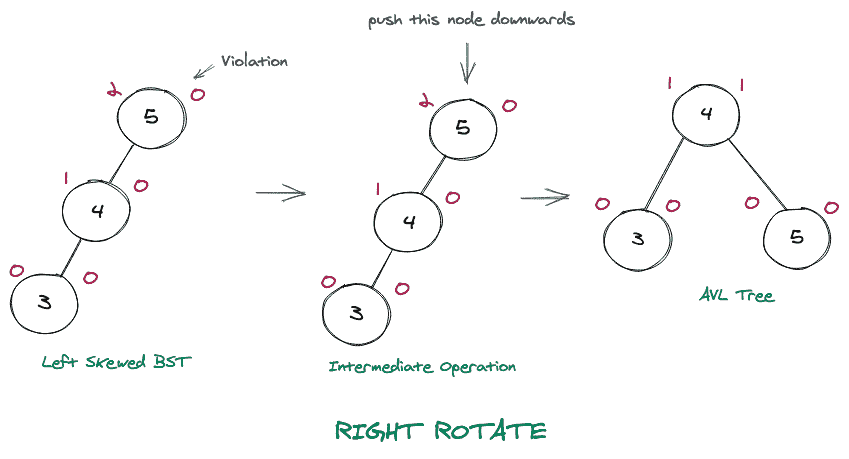
3.左右旋转
当违规发生在违规节点的左子节点的右子树中时，将执行此循环。考虑下面一个不平衡的 BST 的图形表示，为了做到这一点，我们将做一些旋转。
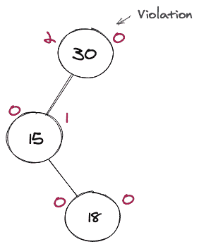
很明显，这不是一个 AVL 树，但是考虑到违规发生的节点，我们把这个节点作为一个枢纽来进行我们的旋转。导致问题的节点是 18，就好像我们去掉那个节点，我们就会有一个平衡的 BST(即 AVL)。因为这个问题是因为左子树的右子树，我们将进行左右旋转，使其平衡。
考虑将上面的树做成 AVL 树的图示。
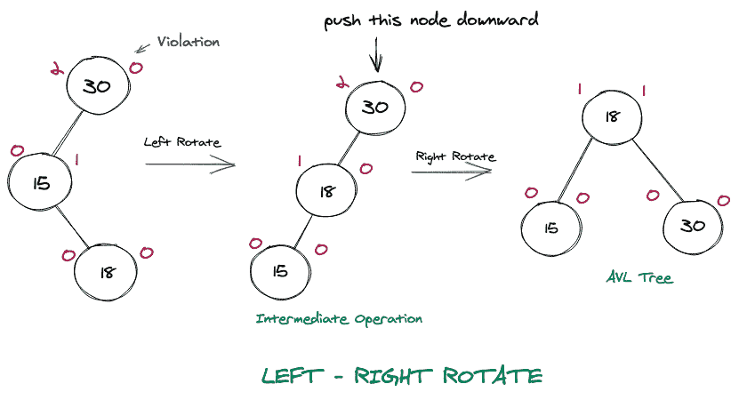
4.左右旋转
当违规发生在违规节点的右子节点的左子树中时，将执行此循环。考虑下面一个不平衡的 BST 的图形表示，为了做到这一点，我们将做一些旋转。
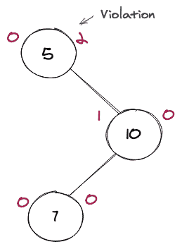
很明显，这不是一个 AVL 树，但是考虑到违规发生的节点，我们把这个节点作为一个枢纽来进行我们的旋转。导致问题的节点是 7，如果我们移除那个节点，我们将有一个平衡的 BST(即 AVL)。由于问题是由于右子树的左子树，我们将进行左右旋转，使其平衡。
考虑将上面的树做成 AVL 树的图示。
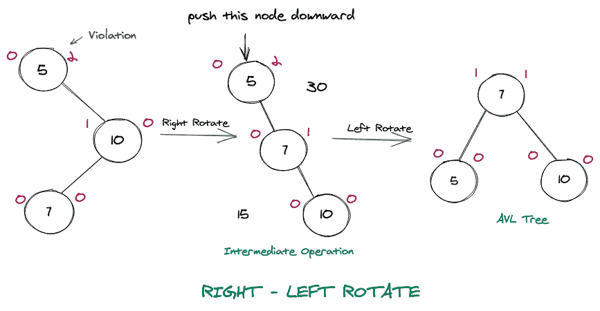
树插入
让我们取一组数组元素，并构建这些元素的 AVL 树。让，nums = [12 , 3 , 9 , 4 , 6 , 2]
制作 AVL 树(带旋转)的完整步骤如下所示。
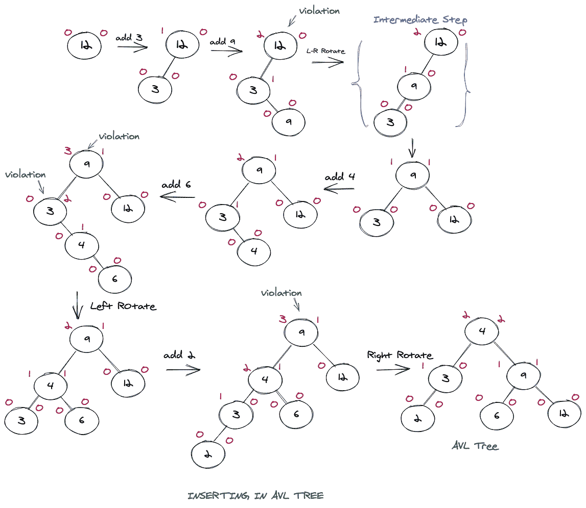
要点:
具有 N 个节点的 AVL 树的最小楼层高度(logN)可以是 2。
节点数为 N 的 AVL 树的高度不能超过 1.44(logN)基数 2。
高度为 h 的 AVL 树中的最大节点数可以是:2^H+1 - 1
AVL 树的高度为 h 的最小节点数可以表示为:N(h) = N(h-1) + N(h-2) + 1，n>2，其中 N(0) = 1，N(1) = 2。
结论
- 我们了解了什么是 AVL 树以及为什么需要它。
- 然后，我们学习了 AVL 树中可能的不同类型的旋转，以使其成为一个平衡的旋转。
- 在旋转之后，我们还在 AVL 树中做了一个插入示例。
- 最后，我们谈到了我们应该记住的与 AVL 不同的关键点。